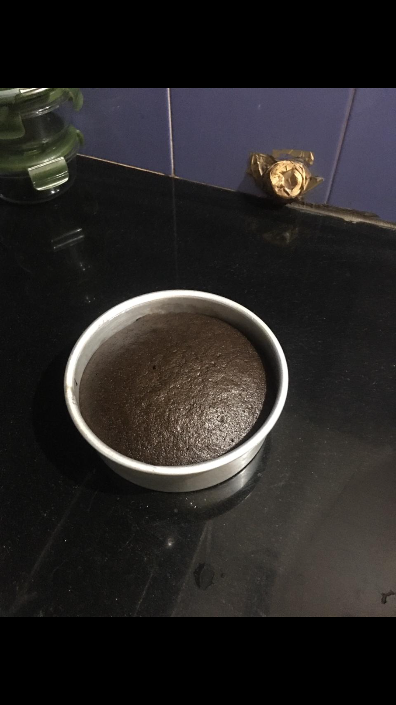
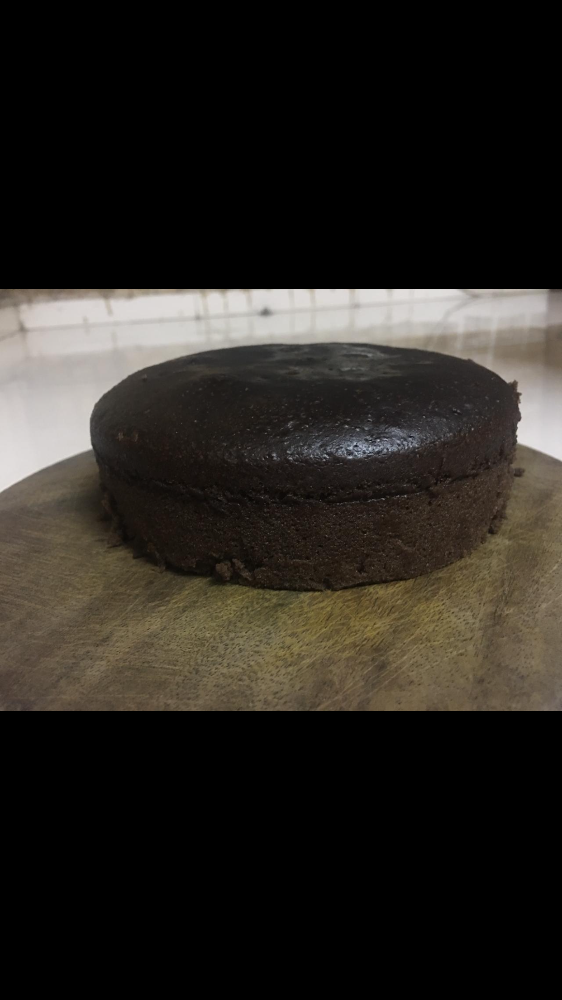
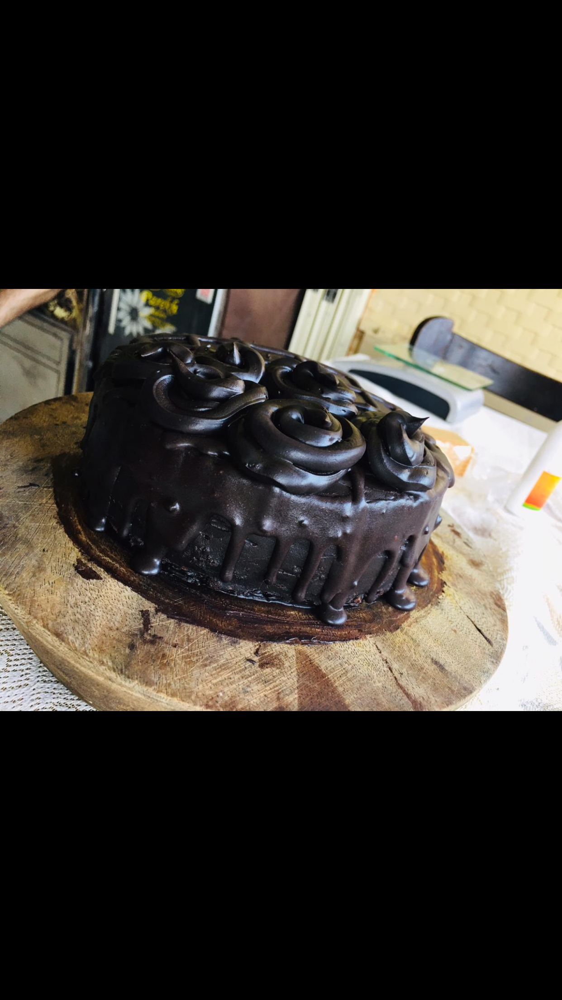
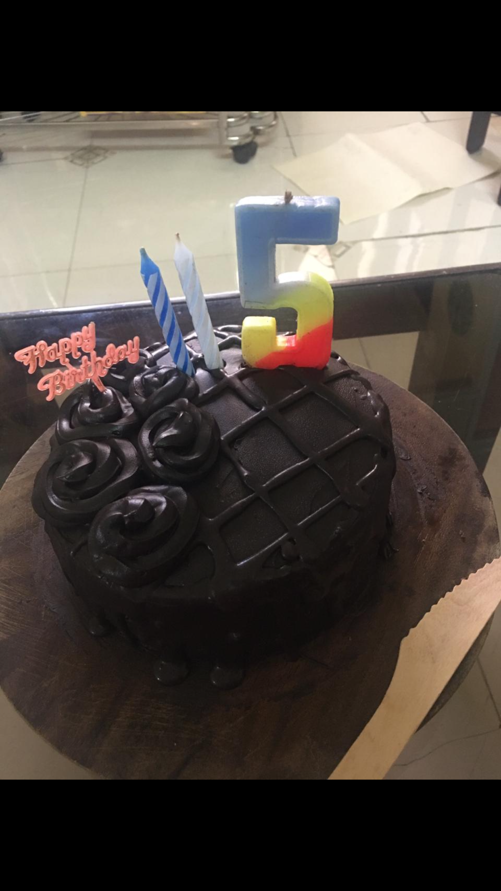

<
<
CHOCOLATE CAKE
HOMEMADE CHOCOLATE CAKE
The process of making chocolate cake at home is very simple & it's taste will be same
as market cake and without oven.So let's begin!


- Preparation time=60 minutes
- Baking time=60 minutes
- Decortion time=30 minutes
INGREDIENTS AND PREPARATORY FOR CAKE-
-> Milk - 1 cup
-> powdered sugar - 1 cup
-> Oil - 1/2 cuo
-> Vinegar - 1 tbsp
-> Vanilla essence - 1/2 tsp
-> All purpose flour - 1 and 1/2 cup
-> Cocoa powder - 2 tbls
-> Baking powder - 1 tsp
-> Baking soda - 1/2 tsp
-> Oven tin(6-7)inchs
INGREDIENTS FOR CHOCOLATE GANACHE-
-> Chopped dark chocolate - 250 gms (2 cups)
-> Fresh cream - 150 gms (1 cup)
-> Butter - 1/2 tsp
METHODS/STEPS-
- In a bowl add milk (room temperature),powdered sugar ,oil , vinegar, vanilla essence and mix it well.
- Keep aside for 5 minutes , after 5 minutes mix well.
- In that bowl keep the strainer and add all purpose flour,cocoa powder,baking powder,baking soda and starin it.
- Now mix well until no lumps,add 2tbls of milk (for adjusting consistency).
- Now cake better is ready ,Now grease the oven tin (6-7 inch tin),put baking paper,pour the better in tin and tap the tin.
- Preheat the pan for 10 minuteson medium flame,after 10 minutes put the cake tin inside the pan and close the lid.
- Bake it for 50-55 minutes on low flame
ORbake in preheated oven at 180 degree celsius for 35-40 minutes
- After 55 minutes check the cake with knief if knief comes out clean swtich off the flame or again keep it for 5 minutes.

- After cooling the cake ,demould the cake.You can see that the cake is super spongy.

- For preparing chocolate ganache take chocolatein a boel n mix the fresh cream and butter and mix it well ,leave it for 5 minutes.
- 5 minutes stir well , now keep it in the fridge for 10 minutes to set.
- Now trim the spongy cake from top and cut the cake in three layers.after the ganache cools,whisk it for 1 minute.
- Assemble the cake,spread sugar syrup well on the 1st slice from the bottom,and spead the ganache.
- Repeat the above step for the remaining slices of cake,cover the whole cake wih the ganache and keep it in fridge for 20-25 minutes.
- After 25 minutes set completely, For dripping add 2tbsp milk in leftover ganache and heat up in double boiler.
- Fill it in the piping bag,drip it on the cake.keep it in the fridge for 15 minutes.

- After set make the design of your own.

And the chocolate cake is ready! Now it's time for you to go for it.
For more recipes, stay connected!